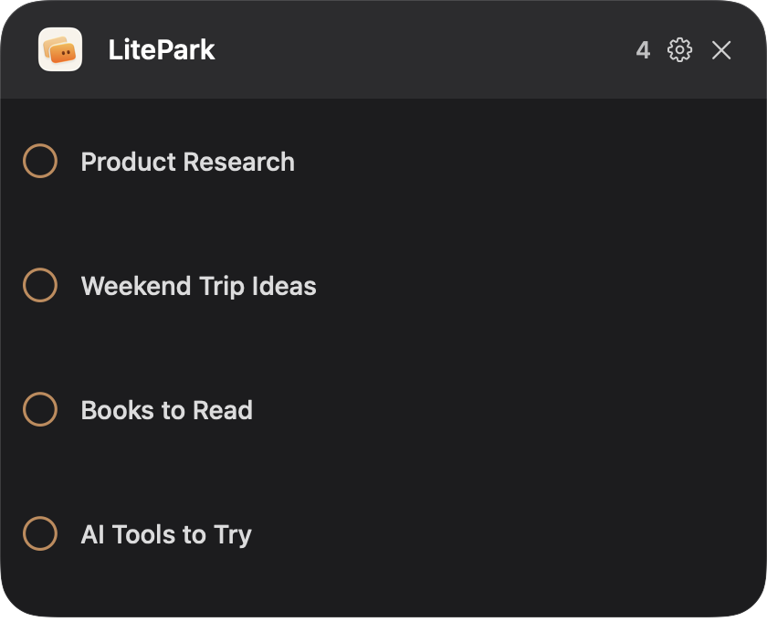

那些现在不想处理、
但不能忘记的 ChatGPT 对话
我做了一个 macOS 小工具，把它们先停在这里，等真正有时间时再回来。
ChatGPT 历史记录保存了对话，却没有表达一个很具体的状态：这段对话我现在不处理，但之后一定要回来。
为什么做 LitePark？
我在 ChatGPT Desktop 里经常同时保留不少对话：产品调研、准备继续看的资料、旅行计划、阅读清单，或者一个暂时没空展开的想法。
这些对话没有消失，它们只是很容易沉进历史记录。收藏、置顶和未读也不完全等于“稍后处理”。我需要的是一个更明确、更轻的队列。
于是有了 LitePark。名字里的 Park，就是先把一段对话停好：Park it now. Pick it up later.

它怎么用？
- 在 ChatGPT Desktop 打开一段对话。
- 按 Control + Option + L 加入 LitePark。
- 通过可移动的悬浮球，或 Control + Option + K 打开列表。
- 拖动调整顺序，点击标题回到对应对话。
- 处理完成后，点击左侧圆圈把它标记为 Done。
v1.0.0 现在能做什么？
- 读取当前打开的 ChatGPT 对话名称并加入队列；
- 新对话放在顶部，同时防止同名项目被重复加入；
- 通过 Drag Handle 手动排序，并在重启后保留顺序；
- 从 LitePark 回到 ChatGPT Desktop 中对应的对话；
- 完成后从队列移除；
- 跨显示器自由移动悬浮球；
- 在本地保存队列，不上传对话内容。
我刻意没有做什么？
LitePark 没有标签、提醒、截止日期、优先级、AI 总结和云同步。它也不想成为另一个任务管理系统。
这个产品只服务一个动作：我现在顾不上这段对话，但我需要一个明确的位置，提醒自己之后回来。
隐私与本地数据
LitePark 只保存本地队列需要的元数据：对话名称、本地项目 ID、加入时间和手动顺序。它不保存 Prompt、回复、截图、账号信息，也没有统计或遥测。
这篇文章和所有公开截图都使用虚构 Demo 对话名，不包含我真实的 ChatGPT 对话。
当前限制
v1.0.0 依赖对话名称识别 ChatGPT 对话。比较稳妥的方式是：
- 先在 ChatGPT 中把对话名称改好；
- 再把它加入 LitePark；
- 加入后暂时不要再次修改名称。
重名对话会被视为不明确，LitePark 不会猜。自动打开也要求目标对话当前能够出现在 ChatGPT 侧栏的 macOS Accessibility 信息中。这套机制后续还会继续优化，但目前没有承诺具体日期。
这是一次怎样的 Vibe Coding？
LitePark 的第一版不是靠一句 Prompt 一次生成的。浮窗响应、悬浮球拖动、全局快捷键、排序、后台唤起 ChatGPT，以及跳转后的标题验证，都经历了真实使用、发现失败、定位原因和再次验证。
AI 加快了实现和检查；产品边界、取舍、视觉反馈和是否真的好用，仍然需要人在真实设备上作判断。
为什么现在发布？
因为最初想解决的完整路径已经跑通了：
它还不完美，但已经是一个可以每天使用、也值得接受真实反馈的 v1.0.0。
GitHub：github.com/victor-zhang-2026/LitePark
下载：进入 GitHub Releases 获取 macOS 安装包。
欢迎体验、Star、提交 Issue，或者告诉我它在你的工作流里哪里顺手、哪里还不顺。
系统要求：macOS 13 或更高版本，并需安装和启动 ChatGPT Desktop。当前安装包尚未经过 Apple notarization，首次打开请按照 GitHub README 中的安全说明操作。